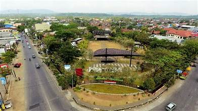

Menghadirkan informasi dan peta interaktif Desa Karangklesem
Desa Karangklesem terletak di Kecamatan Purwokerto Selatan, Kabupaten Banyumas, Jawa Tengah. Desa ini merupakan salah satu wilayah yang terus berkembang, baik dalam sektor ekonomi, sosial, maupun infrastruktur. Dengan luas wilayah yang mencakup area pertanian, permukiman, dan kawasan niaga, Desa Karangklesem memiliki populasi yang cukup padat dengan beragam latar belakang masyarakat. Desa ini dikenal akan suasana lingkungannya yang asri dan bersih, menjadikannya tempat tinggal yang nyaman sekaligus strategis karena dekat dengan pusat kota Purwokerto.
"Terwujudnya Desa Karangklesem yang Mandiri, Sejahtera, dan Berdaya Saing melalui Pengelolaan Sumber Daya Berbasis Partisipasi Masyarakat."